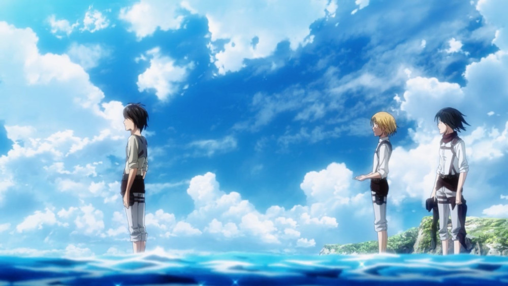
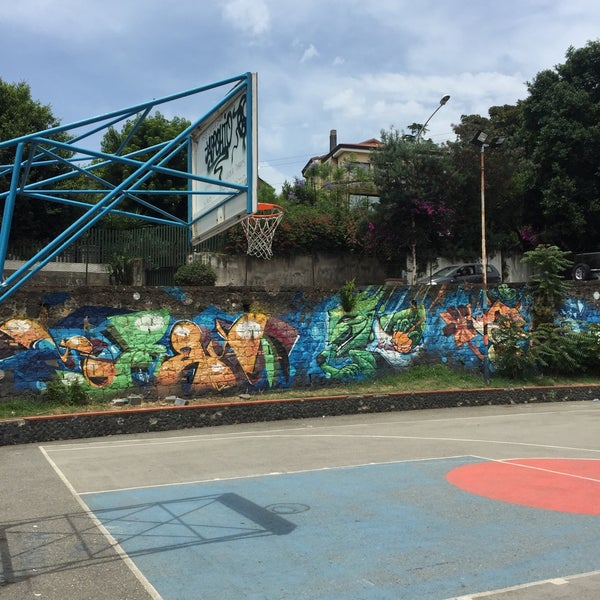
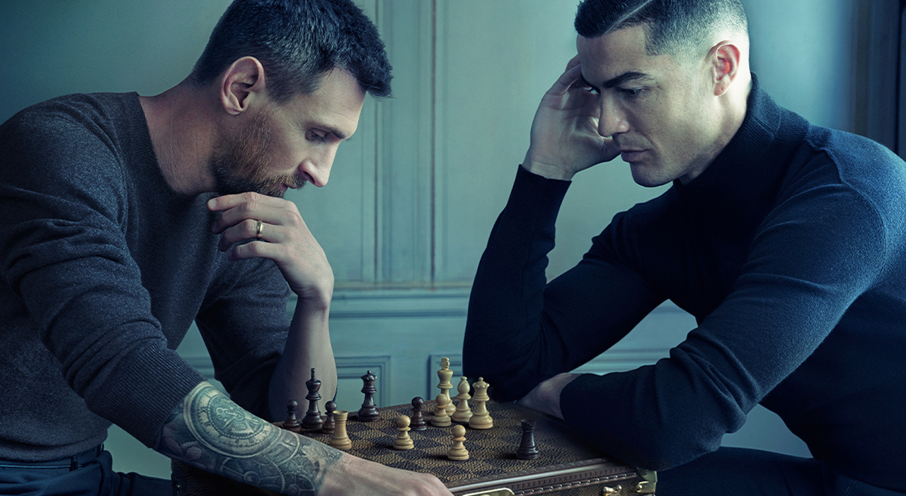
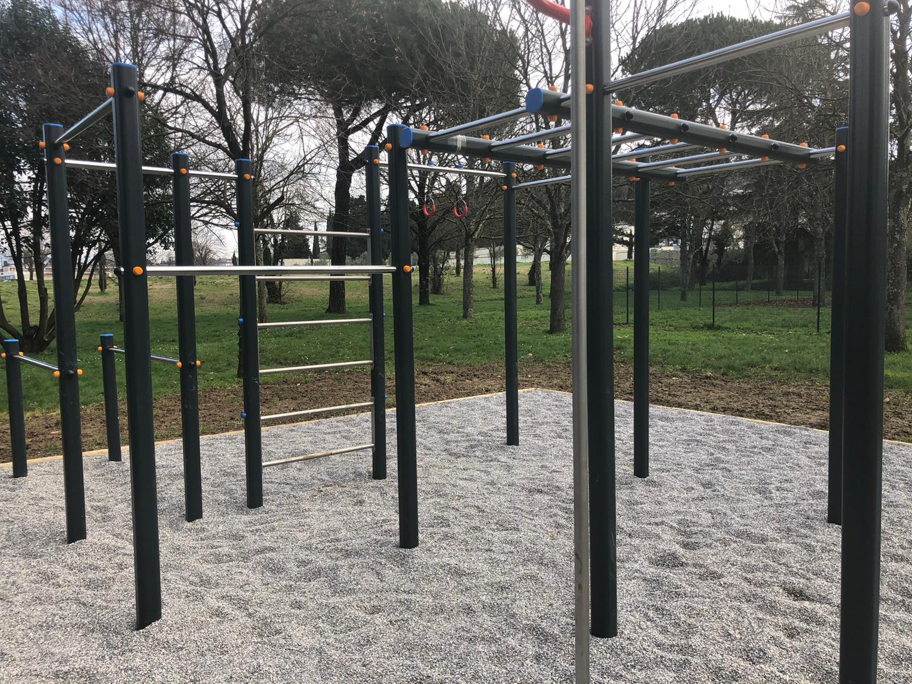

-
L'attacco dei giganti
Chi è il vero nemico?
Ho inziato questo anime nel 2015,durante il secondo anno delle superiori, lo ricordo perchè ai tempi non si parlava d'altro, così decisi di iniziarla per vedere perchè piaceva a tutti. Dico solo che mi sono fatto crescere i capelli per 3 anni in modo da assomigliare al protagonista(sono stato costretto a tagliarli per via delle numerose minaccie subite da amici e parenti); poche cose mi hanno influenzato così tanto e poche opere sono riuscietmi a catturarmi come questa serie: i personaggi, la trama , la voglia di scoprire il mistero che si celava dentro le mura mi hanno tenuto compagnia per praticamente tutto il periodo delle superiori e fanno parte di me ancora oggi. Consiglio questa serie a chiunque,anche a chi non è un fan di questo genere,nulla è come sembra. Tatakae
Pallacancestro
He got game
Sono un patito di sport, in particolar modo il basket:ho iniziato a giocare a 8 anni come attivià pomeridiana al posto di stare tutto il davanti al nintendo.Mi piace correre,giocare di squadra,far segnare i miei compagni tirare da 3, difendere forte e soprattutto vincere(sono abbastanza competitivo).Non sono mai stato particolarmente sociale con nessuno, però grazie a questo sport sono riuscito a trovare degli amici e ad esprimermi in modi che a parole è difficile fare.Considero il campetto come una seconda casa, è il luogo perfetto per staccare la spina e cambiare aria,quando voglio smettere di pensare e rilassarmi è il primo posto in cui vado. Heart before Height
Scacchi
Pedone e4
Tutti nella vita prima o poi si inbattono nel gioco degli scacchi; verso Novembre del 2021 su twitch cominciano a entrare nel panorama mainstream grand master come Masgnus Karlsen , Hikaru e altri streamer inerenti a questo mondo (Gotham Chess,le sorelle Botez sono un altro esempio).Durante questo periodo,presi dalla moda del momento, io e i miei amici ci siamo iscritti su Chess.com e abbiamo imparato da autodidatti;prima giocavamo da remoto sentendoci su discord per via delle restrizioni legate al covid,adesso che possiamo vederci se capita l'occasione e c'è una scacchiera nei paraggi non mi tiro indietro. Non esiste gioco più brutale degli scacchi,ed è bello imparare come difendersi e come reagire alle mosse dell'avversario. Scacco matto
Palestra
What do you whant to be when you grow up?
Ho fatto e faccio ancora fatica ad accettare il mio corpo, e la palestra o più in generale l'allenamento mi hanno insegnato a capire come migliorarmi fisicamente e mentalmente.Ho imparato d accettare il dolore e a renderlo mio amico; ad oggi credo che ognuno di noi dovrebbe ritagliare per quanto possibile uno spazio di tempo e dedicarlo per migliorarsi fisicamente, io ne ho beneficiato sia a livello pratico che mentale:"It is a shame for a man to grow old without seeing the beauty and strength of which his body is capable", il nostro corpo è in grado di fare cose incredibili, e privarsene è un peccato. Kind
